PENERAPAN KONFIGURASI NETWORK
UNTUK KAMPUS DAN ANALISA
Disusun oleh
DIMAS KURNIAWAN
NIM: 25120300016
PROGRAM STUDI ILMU KOMPUTER
Fakultas Ilmu Komputer
Universitas Cakrawala
LEMBAR PENGESAHAN
Laporan dengan judul:
"PENERAPAN KONFIGURASI NETWORK
UNTUK KAMPUS DAN ANALISA"
Telah disetujui dan disahkan sebagai laporan tugas akhir mata kuliah
Networking and Communication
Lawrance Adi Supriyono, S.Kom., M.T.
NIP. .........................
Mengetahui,
Koordinator Mata Kuliah
...................................
NIP. .........................
Jakarta, ...................... 2025
ii
Kurniawan, Dimas (2025). Penerapan Konfigurasi Network untuk Kampus dan Analisa.
Perkembangan teknologi informasi telah menjadi pondasi penting dalam transformasi pendidikan tinggi di Indonesia. Universitas "Cakrawala" sebagai institusi pendidikan tinggi menghadapi tantangan dalam menyediakan infrastruktur jaringan yang memadai untuk mendukung kegiatan tri dharma perguruan tinggi. Saat ini, kampus memiliki beberapa fasilitas utama yang tersebar di area kampus namun belum terintegrasi dalam satu sistem jaringan yang terpadu.
Permasalahan utama yang dihadapi meliputi: ketidakterhubungan antar gedung, akses internet yang tidak merata, kesulitan dalam mengakses sistem akademik dari berbagai lokasi, serta tidak adanya manajemen jaringan yang terpusat. Berdasarkan analisis kebutuhan, diperlukan pembangunan jaringan komputer kampus yang terintegrasi dengan cakupan area meliputi: Gedung Rektorat, Gedung Perkuliahan, Laboratorium Komputer, dan Perpustakaan Pusat.
Penelitian ini bertujuan membangun infrastruktur jaringan komputer kampus terintegrasi, handal, dan scalable dengan basis arsitektur hierarchical hybrid topology (gabungan dari topologi star hierarkis dan mesh parsial), yang terpusat di Gedung Rektorat dan terhubung ke seluruh fasilitas kampus melalui perangkat Cisco seri 2960, router RTR-CAKRAWALA, dan access point terdistribusi.
Hasil implementasi menunjukkan bahwa jaringan berhasil mengintegrasikan keempat area utama kampus dengan segmentasi VLAN berdasarkan fungsi (Management, Server, Dosen, Staf, Mahasiswa). Pengujian konektivitas mencapai success rate 100%, dan mekanisme failover dengan Spanning Tree Protocol berfungsi optimal dengan waktu peralihan di bawah 15 detik. Jaringan juga telah dikonfigurasi dengan firewall ASA 5506 dan routing dinamis EIGRP untuk koneksi internet yang aman.
Kata kunci: Jaringan kampus, topologi hybrid, VLAN, Cisco Packet Tracer, Spanning Tree Protocol, EIGRP, failover.
iii
HALAMAN JUDUL
i
HALAMAN PENGESAHAN
ii
ABSTRAK
iii
DAFTAR ISI
iv
DAFTAR GAMBAR
v
DAFTAR TABEL
vi
BAB I PENDAHULUAN
1
1.1 Latar Belakang
1
1.2 Tujuan Pembuatan Jaringan
2
1.2.1 Tujuan Umum
2
1.2.2 Tujuan Khusus
2
1.2.3 Manfaat yang Diharapkan
3
BAB II IMPLEMENTASI DAN KONFIGURASI
4
2.1 Desain Topologi & Logika Jaringan
4
2.2 Konfigurasi Jaringan
6
2.3 Konektivitas dan Pengujian
18
BAB III ANALISIS KEBUTUHAN
29
BAB IV PERANCANGAN JARINGAN
31
BAB V ANALISIS SIMULASI CISCO PACKET TRACER
34
BAB VI KESIMPULAN
49
DAFTAR PUSTAKA
51
LAMPIRAN
52
iv
Gambar 2.1 Topologi Hybrid Universitas "Cakrawala"
5
Gambar 2.2 Konfigurasi DHCP Server
11
Gambar 2.3 Konfigurasi Wireless Dosen
12
Gambar 2.4 Konfigurasi Wireless Staf
14
Gambar 2.5 Konfigurasi Wireless Mahasiswa
16
Gambar 5.1 Topologi dengan Firewall dan Router ISP
40
Gambar 5.2 Pengujian Ping dari VLAN 40
45
v
Tabel 2.1 Skema Alokasi IP
6
Tabel 4.1 Daftar Perangkat Jaringan
32
Tabel 4.2 Tabel IP Address
33
Tabel 5.1 Konfigurasi Firewall dan Router ISP
41
Tabel 5.2 Status Spanning Tree Sebelum Failover
35
Tabel 5.3 Status Spanning Tree Sesudah Failover
36
vi
PENDAHULUAN
1.1 Latar Belakang
Perkembangan teknologi informasi telah menjadi pondasi penting dalam transformasi pendidikan tinggi di Indonesia. Universitas "Cakrawala" sebagai institusi pendidikan tinggi yang berfokus pada pengembangan ilmu pengetahuan dan teknologi menghadapi tantangan dalam menyediakan infrastruktur jaringan yang memadai untuk mendukung kegiatan tri dharma perguruan tinggi. Saat ini, kampus memiliki beberapa fasilitas utama yang tersebar di area kampus namun belum terintegrasi dalam satu sistem jaringan yang terpadu.
Permasalahan utama yang dihadapi meliputi: ketidakterhubungan antar gedung, akses internet yang tidak merata, kesulitan dalam mengakses sistem akademik dari berbagai lokasi, serta tidak adanya manajemen jaringan yang terpusat. Laboratorium komputer yang seharusnya menjadi pusat pembelajaran teknologi masih beroperasi secara terisolasi, perpustakaan digital belum dapat diakses secara optimal, dan sistem e-learning sering mengalami kendala konektivitas.
Berdasarkan analisis kebutuhan, diperlukan pembangunan jaringan komputer kampus yang terintegrasi dengan cakupan area meliputi: Gedung Rektorat (pusat administrasi), Gedung Perkuliahan, Laboratorium Komputer, dan Perpustakaan Pusat. Jaringan ini harus mampu menunjang aktivitas akademik 24/7, mendukung sistem e-learning, menyediakan akses digital library, serta memfasilitasi penelitian kolaboratif.
1.2 Tujuan Pembuatan Jaringan
1.2.1 Tujuan Umum
Membangun infrastruktur jaringan komputer kampus terintegrasi, handal, dan scalable untuk mendukung kegiatan akademik, administrasi, dan penelitian di Universitas "Cakrawala" dengan basis arsitektur hierarchical hybrid topology (gabungan dari topologi star hierarkis dan mesh parsial), yang terpusat di Gedung Rektorat dan terhubung ke seluruh fasilitas kampus melalui perangkat Cisco seri 2960, router RTR-CAKRAWALA, dan access point terdistribusi.
1.2.2 Tujuan Khusus
- Menyediakan koneksi jaringan terpadu. Memberikan akses jaringan bagi dosen, mahasiswa, dan staf di Gedung Rektorat dan Gedung Kuliah melalui PC kabel dan laptop, serta mendukung pengguna nirkabel di seluruh area kampus.
- Menghubungkan seluruh area utama kampus. Mengintegrasikan Gedung Rektorat, Gedung Kuliah, Laboratorium Komputer, dan Perpustakaan ke dalam satu jaringan yang dikelola secara terpusat.
- Menyediakan akses internet yang stabil. Menjamin koneksi internet yang lancar dengan pengaturan bandwidth dan prioritas trafik akademik seperti e-learning dan perpustakaan digital.
- Mendukung layanan e-learning dan perpustakaan digital. Menjaga layanan tetap berjalan meskipun terjadi gangguan jaringan melalui penggunaan koneksi cadangan antar perangkat.
- Menyediakan jaringan wireless kampus. Mendukung akses Wi-Fi antar gedung dengan satu jaringan terpadu, serta memisahkan akses staf/dosen dan mahasiswa untuk menjaga keamanan.
- Mendukung kegiatan penelitian. Menyediakan jaringan khusus laboratorium agar proses penelitian dan pertukaran data dapat berjalan dengan baik.
- Meningkatkan keamanan jaringan. Melindungi data dengan pemisahan jaringan berdasarkan fungsi pengguna dan pengaturan keamanan pada perangkat jaringan.
1
1.2.3 Manfaat yang Diharapkan
1. Bagi Mahasiswa: Mahasiswa dapat mengakses materi kuliah dan perpustakaan digital dengan mudah melalui jaringan kabel di laboratorium dan Wi-Fi di area kampus. Jaringan ini juga mendukung kegiatan diskusi dan kerja kelompok.
2. Bagi Dosen: Dosen lebih mudah mengelola bahan ajar, mengakses jurnal ilmiah, serta melaksanakan ujian dan penilaian secara daring dengan koneksi yang stabil.
3. Bagi Staf Administrasi: Staf dapat mengelola data akademik dan administrasi secara terpusat sehingga pelayanan menjadi lebih cepat dan efisien.
4. Bagi Institusi: Institusi memperoleh sistem jaringan yang terkelola dengan baik, mendukung operasional kampus, dan meningkatkan kesiapan menuju kampus digital.
5. Bagi Penelitian: Jaringan yang andal memudahkan pertukaran data dan kolaborasi penelitian antar laboratorium dan unit kerja.
Catatan: Implementasi jaringan ini menggunakan Cisco Packet Tracer sebagai alat simulasi untuk menguji konfigurasi dan fungsionalitas sebelum diterapkan di lingkungan nyata.
2
IMPLEMENTASI DAN KONFIGURASI
2.1 Desain Topologi & Logika Jaringan
2.1.1 Gambaran Umum Topologi
Berdasarkan konfigurasi perangkat dan adanya koneksi cadangan pada switch, jaringan yang digunakan menerapkan topologi hybrid. Topologi ini merupakan gabungan dari topologi star hierarkis dan mesh parsial.
Topologi star hierarkis digunakan sebagai struktur utama, di mana perangkat pada setiap gedung terhubung ke switch akses Cisco 2960 atau Access Point, kemudian diteruskan ke switch distribusi (2960 SW-AK) dan router pusat (RTR-CAKRAWALA). Struktur ini memudahkan pengelolaan dan pemeliharaan jaringan.
Sementara itu, topologi mesh parsial diterapkan pada lapisan distribusi melalui koneksi redundan antar switch untuk meningkatkan keandalan jaringan. Koneksi ini dikelola menggunakan Spanning Tree Protocol (Rapid-PVST+) dan EtherChannel guna mencegah loop serta menyediakan jalur cadangan saat terjadi gangguan.
Gambar 2.1 Topologi Hybrid Universitas "Cakrawala"
2.1.2 Pembagian Segmentasi Jaringan
Segmentasi jaringan dilakukan berdasarkan fungsi dan lokasi untuk memudahkan manajemen, keamanan, dan alokasi bandwidth:
- VLAN 1 – Perangkat Cisco (Gedung Rektorat – Network Room): Untuk perangkat jaringan: Router, Switch
- VLAN 10 – Server (Gedung Rektorat – Network Room): Untuk perangkat Server DHCP
- VLAN 20 – Dosen: Ruang Dosen dan perangkat dosen
- VLAN 30 – Staf: Ruang Staf dan seluruh PC Staf
- VLAN 40 – Mahasiswa: Ruang Lab dan Perpustakaan

Gambar 2.1 Topologi Hybrid Universitas "Cakrawala"
Keterangan Gambar:
- RTR-CAKRAWALA sebagai router utama di Gedung Rektorat
- SW-CORE dan SW-BACKUP sebagai switch distribusi dengan EtherChannel
- SW-AKADEMIS sebagai switch akses di Gedung Kuliah
- Access Point untuk koneksi wireless di setiap area
- Jalur utama (biru) dan jalur backup (merah) untuk redundansi
2.1.3 Perangkat Jaringan yang Digunakan
- Router (RTR-CAKRAWALA): Berlokasi di Network Room Gedung Rektorat, berfungsi sebagai gateway, DHCP server, dan pengatur routing antar VLAN.
- Switch Layer 2 (2960 SW-CORE): Switch utama di Network Room yang menangani inter-VLAN routing dan koneksi ke router.
- Switch Layer 2 (2960 SW-BACKUP): Switch akses di Network Room untuk jalur alternatif.
- Switch Layer 2 (2960 SW-AKADEMIS): Switch yang berada di Gedung Kuliah menghubungkan jaringan di Ruang Lab dan Perpustakaan, jalur utama terhubung dengan SW-CORE dan jalur alternatif SW-BACKUP.
- Access Point (WR1300H): Menyediakan konektivitas nirkabel bagi staf, dosen, dan mahasiswa, terletak di setiap ruangan.
- Server DHCP: Mengelola alokasi IP otomatis untuk semua VLAN.
5
4
2.1.3 Perangkat Jaringan yang Digunakan
- Router (RTR-CAKRAWALA): Berlokasi di Network Room Gedung Rektorat, berfungsi sebagai gateway, DHCP server, dan pengatur routing antar VLAN.
- Switch Layer 2 (2960 SW-CORE): Switch utama di Network Room yang menangani inter-VLAN routing dan koneksi ke router.
- Switch Layer 2 (2960 SW-BACKUP): Switch akses di Network Room untuk jalur alternatif.
- Switch Layer 2 (2960 SW-AKADEMIS): Switch yang berada di Gedung Kuliah menghubungkan jaringan di Ruang Lab dan Perpustakaan, jalur utama terhubung dengan SW-CORE dan jalur alternatif SW-BACKUP.
- Access Point (WR1300H): Menyediakan konektivitas nirkabel bagi staf, dosen, dan mahasiswa, terletak di setiap ruangan.
- Server DHCP: Mengelola alokasi IP otomatis untuk semua VLAN.
2.2 Konfigurasi Jaringan
2.2.1 Skema Alokasi IP
Subnet yang digunakan adalah 192.168.0.0/27 dengan pembagian sebagai berikut:
|
VLAN 1 Network |
VLAN 10 Server |
VLAN 20 Dosen |
VLAN 30 Staf |
VLAN 40 Mahasiswa |
| IP Network |
192.168.0.0 |
192.168.0.32 |
192.168.0.64 |
192.168.0.96 |
192.168.0.128 |
| IP Broadcast |
192.168.0.31 |
192.168.0.63 |
192.168.0.95 |
192.168.0.127 |
192.168.0.159 |
| IP Range |
192.168.0.1-30 |
192.168.0.33-62 |
192.168.0.65-94 |
192.168.0.97-126 |
192.168.0.129-158 |
Subnet Mask: 255.255.255.224
5
2.2.2 Konfigurasi Router (RTR-CAKRAWALA)
hostname RTR-CAKRAWALA
interface GigabitEthernet0/1
ip address 192.168.0.1 255.255.255.224
description "Connect to SW-CORE"
duplex auto
speed auto
!
interface GigabitEthernet0/1.10
encapsulation dot1Q 10
ip address 192.168.0.33 255.255.255.224
ip helper-address 192.168.0.34
!
interface GigabitEthernet0/1.20
encapsulation dot1Q 20
ip address 192.168.0.65 255.255.255.224
ip helper-address 192.168.0.34
!
interface GigabitEthernet0/1.30
encapsulation dot1Q 30
ip address 192.168.0.97 255.255.255.224
ip helper-address 192.168.0.34
!
interface GigabitEthernet0/1.40
encapsulation dot1Q 40
ip address 192.168.0.129 255.255.255.224
ip helper-address 192.168.0.34
2.2.3 Konfigurasi Switch Layer 2 (2960 SW-CORE)
hostname SW-CORE
interface FastEthernet0/23
description "etherchannel to SW-BACKUP"
switchport trunk allowed vlan 1,10,20,30,40
switchport mode trunk
channel-group 1 mode desirable
!
interface FastEthernet0/24
description "etherchannel to SW-BACKUP"
switchport trunk allowed vlan 1,10,20,30,40
switchport mode trunk
channel-group 1 mode desirable
!
interface GigabitEthernet0/1
description "Connect to RTR-CAKRAWALA"
switchport trunk allowed vlan 1,10,20,30,40
switchport mode trunk
!
interface GigabitEthernet0/2
description "Connect to SW-AKADEMIS"
switchport trunk allowed vlan 1,10,20,30,40
switchport mode trunk
spanning-tree cost 4
6
interface Vlan1
ip address 192.168.0.2 255.255.255.224
!
ip default-gateway 192.168.0.1
spanning-tree mode rapid-pvst
spanning-tree extend system-id
spanning-tree vlan 1,10,20,30,40 priority 4096
!
interface Port-channel1
switchport trunk allowed vlan 1,10,20,30,40
switchport mode trunk
spanning-tree cost 12
!
interface FastEthernet0/1
description 'Connect to Server DHCP"
switchport access vlan 10
switchport mode access
!
interface FastEthernet0/2
description "VLAN 20 Dosen"
switchport access vlan 20
switchport mode access
!
interface FastEthernet0/3
description "VLAN 20 Dosen via Wifi Dosen"
switchport access vlan 20
switchport mode access
!
interface FastEthernet0/4
description "VLAN 20 Dosen"
switchport access vlan 20
switchport mode access
!
interface FastEthernet0/5
description "VLAN 20 Dosen"
switchport access vlan 20
switchport mode access
Catatan Konfigurasi EtherChannel: Interface FastEthernet0/23 dan 0/24 dikelompokkan menjadi Port-channel1 dengan bandwidth total 200 Mbps (2 × 100 Mbps).
7
2.2.4 Konfigurasi Switch Layer 2 (2960 SW-BACKUP)
hostname SW-BACKUP
!
spanning-tree mode pvst
spanning-tree extend system-id
spanning-tree vlan 1,10,20,30,40 priority 8192
!
interface Port-channel1
switchport trunk allowed vlan 1,10,20,30,40
switchport mode trunk
spanning-tree cost 20
!
interface FastEthernet0/1
description "VLAN 30 Staf"
switchport access vlan 30
switchport mode access
!
interface FastEthernet0/2
description "VLAN 30 Staf"
switchport access vlan 30
switchport mode access
!
interface FastEthernet0/3
description "VLAN 30 Staf"
switchport access vlan 30
switchport mode access
!
interface FastEthernet0/4
description "VLAN 30 Staf via Wifi_Staf"
switchport access vlan 30
switchport mode access
!
interface FastEthernet0/5
description "VLAN 30 Staf"
switchport access vlan 30
switchport mode access
!
interface FastEthernet0/23
switchport trunk allowed vlan 1,10,20,30,40
switchport mode trunk
channel-group 1 mode desirable
!
interface FastEthernet0/24
switchport trunk allowed vlan 1,10,20,30,40
switchport mode trunk
channel-group 1 mode desirable
8
!
interface GigabitEthernet0/1
switchport trunk allowed vlan 1,10,20,30,40
switchport mode trunk
spanning-tree cost 4
!
interface GigabitEthernet0/2
switchport trunk allowed vlan 1,10,20,30,40
switchport mode trunk
!
interface Vlan1
ip address 192.168.0.4 255.255.255.224
!
ip default-gateway 192.168.0.1
2.2.5 Konfigurasi Switch Layer 2 (2960 SW-AKADEMIS)
hostname SW-AKADEMIS
!
spanning-tree mode pvst
spanning-tree extend system-id
interface FastEthernet0/1
description "VLAN 30 Staf di Ruang Perpus"
switchport access vlan 30
switchport mode access
!
interface FastEthernet0/2
description "VLAN 40 Mahasiswa via Wifi_Mhs"
switchport access vlan 40
switchport mode access
interface range FastEthernet0/3-22
description "VLAN 40 Mahasiswa di Ruang Lab"
switchport access vlan 40
switchport mode access
interface GigabitEthernet0/1
description "Connect to SW-BACKUP"
switchport trunk allowed vlan 1,10,20,30,40
switchport mode trunk
spanning-tree cost 20
!
interface GigabitEthernet0/2
description "Connect to SW-CORE"
switchport trunk allowed vlan 1,10,20,30,40
switchport mode trunk
spanning-tree cost 4
!
interface Vlan1
ip address 192.168.0.3 255.255.255.224
!
ip default-gateway 192.168.0.1
9
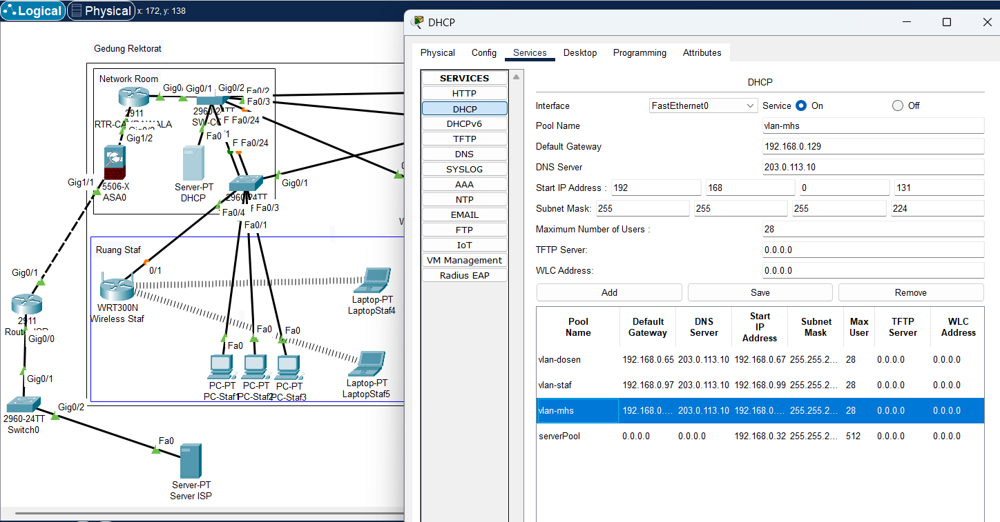
Gambar 2.2 Konfigurasi DHCP Server
Server DHCP dikonfigurasi dengan alamat IP 192.168.0.34 pada VLAN 10 (Server). Konfigurasi pool DHCP untuk setiap VLAN:
| Pool Name |
Default Gateway |
Start IP Address |
Subnet Mask |
Max Users |
| Vlan-mahasiswa |
192.168.0.129 |
192.168.0.131 |
255.255.255.224 |
28 |
| Vlan-staf |
192.168.0.97 |
192.168.0.99 |
255.255.255.224 |
28 |
| Vlan-dosen |
192.168.0.65 |
192.168.0.67 |
255.255.255.224 |
28 |
Catatan: VLAN 1 (Device) dan VLAN 10 (Server) tidak disetting di DHCP, konfigurasi IP dilakukan secara manual/statis.
Gambar 2.2 Konfigurasi DHCP Server
10
2.2.7.1 Wireless Dosen
Konfigurasi wireless untuk dosen menggunakan Access Point dengan spesifikasi berikut:
- IP Address: 192.168.0.66/27
- Subnet Mask: 255.255.255.224
- Nama WiFi: Wifi_Dosen
- Password: Dosen123
- Security Mode: WPA2 Personal
- Encryption: TKIP
- VLAN: 20 (Dosen)
Gambar 2.3 Konfigurasi Wireless Dosen
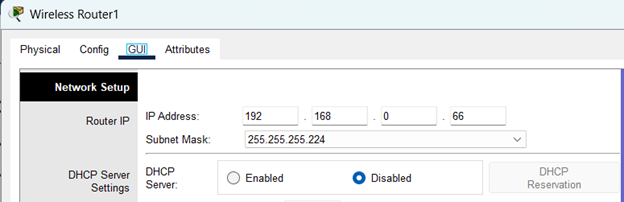
Gambar 2.3a Network Setup
IP: 192.168.0.66/27
DHCP: Disabled
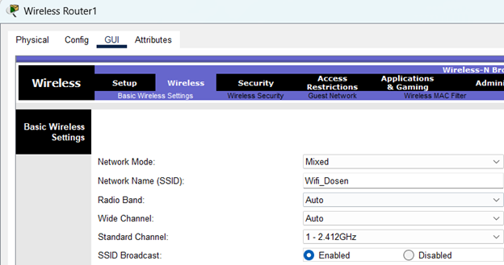
Gambar 2.3b Wireless Settings
SSID: Wifi_Dosen
Channel: 1 (2.412GHz)
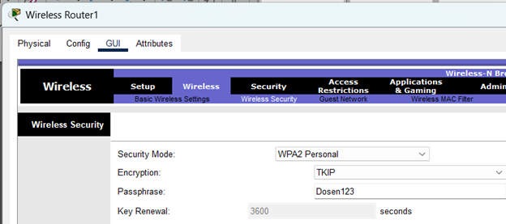
Gambar 2.3c Security Settings
WPA2 Personal
Password: Dosen123
Gambar 2.3 Konfigurasi Wireless Dosen: (a) Network Setup, (b) Wireless Settings, (c) Security Settings
Detail Konfigurasi Wireless Dosen:
Network Configuration:
- Router IP: 192.168.0.66
- Subnet Mask: 255.255.255.224
- DHCP Server: Disabled
- VLAN Assignment: 20
Wireless Settings:
- SSID: Wifi_Dosen
- Network Mode: Mixed
- Radio Band: Auto
- Channel: 1 (2.412GHz)
Security Configuration:
- Security Mode: WPA2 Personal
- Encryption: TKIP
- Passphrase: Dosen123
- Key Renewal: 3600 seconds
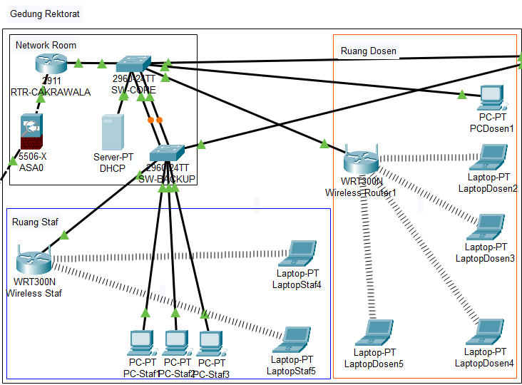
Gambar 2.3d Topologi Wireless Dosen
Access Point terhubung ke switch melalui VLAN 20 dengan alokasi bandwidth khusus untuk dosen
Konfigurasi wireless dosen didesain untuk memberikan akses yang stabil dan aman bagi kegiatan akademik. VLAN 20 mengisolasi trafik dosen dari pengguna lain dan memberikan prioritas bandwidth untuk aktivitas seperti:
- Akses jurnal ilmiah dan materi perkuliahan
- Koneksi ke sistem e-learning
- Video conference untuk kuliah daring
- Akses ke perpustakaan digital
12
2.2.7.2 Wireless Staf
Konfigurasi wireless untuk staf administrasi menggunakan Access Point terpisah dengan spesifikasi berikut:
- IP Address: 192.168.0.98/27
- Subnet Mask: 255.255.255.224
- Nama WiFi: Wifi_Staf
- Password: Staff123
- Security Mode: WPA2 Personal
- Encryption: TKIP
- VLAN: 30 (Staf Administrasi)
Gambar 2.4 Konfigurasi Wireless Staf
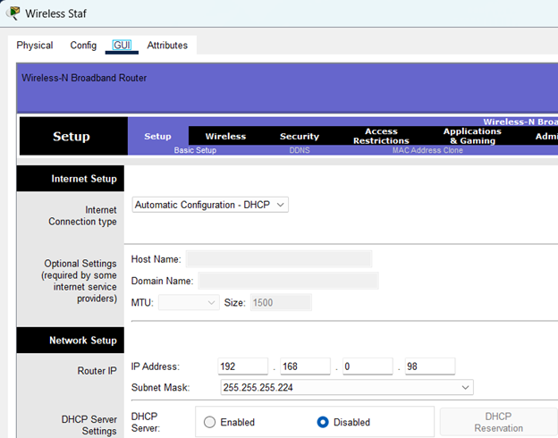
Gambar 2.4a Internet Setup
Connection Type: DHCP
MTU Size: 1500
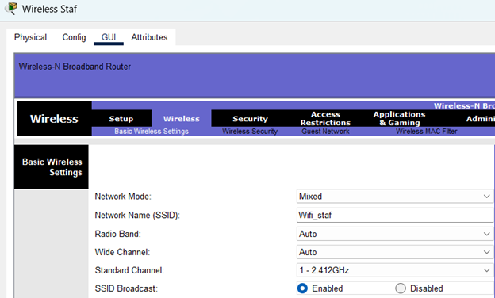
Gambar 2.4b Network Setup
IP: 192.168.0.98/27
DHCP Server: Disabled
Gambar 2.4c Security Settings
WPA2 Personal
Password: Staff123
Gambar 2.4 Konfigurasi Wireless Staf: (a) Internet Setup, (b) Network Setup, (c) Security Settings
📋 Detail Konfigurasi Wireless untuk Staf Administrasi
■ Basic Configuration:
| Device Model |
WRT300N |
| Firmware Version |
v1.0.0 |
| Interface |
FastEthernet0/4 (VLAN 30) |
■ Wireless Settings:
| Network Mode |
Mixed |
| Radio Band |
Auto |
| Standard Channel |
1 - 2.412GHz |
Gambar 2.4d Topologi Jaringan Wireless Staf
Access Point staf terhubung langsung ke switch melalui port FastEthernet0/4 dengan konfigurasi VLAN 30
🔐 Keamanan Jaringan Staf:
- Isolasi VLAN 30: Trafik staf terpisah dari dosen dan mahasiswa
- WPA2 Personal: Enkripsi kuat untuk mencegah unauthorized access
- Password Policy: Password kompleks dengan kombinasi huruf dan angka
- SSID Broadcast: Enabled untuk kemudahan koneksi
Jaringan wireless staf dirancang khusus untuk mendukung aktivitas administrasi kampus seperti:
✓ Sistem Administrasi
Akses ke sistem keuangan dan kepegawaian
✓ Database Akademik
Pengelolaan data mahasiswa dan nilai
✓ Email & Komunikasi
Komunikasi internal dan eksternal
✓ Backup Data
Sinkronisasi data ke server pusat
14
2.2.7.3 Wireless Mahasiswa
Konfigurasi wireless untuk mahasiswa menggunakan Access Point dengan coverage area luas untuk mendukung aktivitas akademik:
- IP Address: 192.168.0.130/27
- Subnet Mask: 255.255.255.224
- Nama WiFi: Wifi_Mhs
- Password: Mahasiswa123
- Security Mode: WPA2 Personal
- Encryption: TKIP
- VLAN: 40 (Mahasiswa)
- Coverage Area: Gedung Kuliah, Perpustakaan, Area Publik
Gambar 2.5 Konfigurasi Wireless Mahasiswa
VLAN 40 - Area Publik Kampus
🖥️ Gambar 2.5a Network Setup
IP: 192.168.0.130
Subnet: 255.255.255.224
📶 Gambar 2.5b Wireless Settings
SSID: Wifi_Mhs
Channel: 1 (2.412GHz)
🔐 Gambar 2.5c Security Settings
Security: WPA2 Personal
Password: Mahasiswa123
Legenda Warna:
■ Network
■ Wireless
■ Security
Gambar 2.5 Konfigurasi Wireless Mahasiswa
📊 Perbandingan Konfigurasi Wireless untuk Tiga Kelompok Pengguna
| Parameter |
Dosen (VLAN 20) |
Staf (VLAN 30) |
Mahasiswa (VLAN 40) |
| IP Address |
192.168.0.66 |
192.168.0.98 |
192.168.0.130 |
| SSID |
Wifi_Dosen |
Wifi_Staf |
Wifi_Mhs |
| Password |
Dosen123 |
Staff123 |
Mahasiswa123 |
| Bandwidth |
High Priority |
Medium Priority |
Standard |
| Max Users |
50 |
30 |
100+ |

Wall Mount
Perpustakaan
Lab Komputer
Gambar 2.5d Coverage Area Wireless Mahasiswa
Jaringan mahasiswa mencakup area publik kampus dengan 3 Access Point untuk coverage optimal
📈 Spesifikasi Teknis:
- Device Model: WR1300H
- Wireless Standard: 802.11n
- Frequency: 2.4 GHz
- Max Speed: 300 Mbps
- Antenna: 2x Internal
- Coverage Radius: 50 meters
🎯 Target Pengguna:
- Mahasiswa reguler: 500+ users
- Akses e-learning platform
- Perpustakaan digital
- Video streaming edukasi
- Kolaborasi kelompok belajar
- Ujian online
⚠️ Kebijakan Penggunaan:
1
Fair Usage Policy: Bandwidth dibatasi 5 Mbps/user
2
Time Restriction: 24/7 dengan QoS priority rendah
3
Content Filtering: Blokir situs tidak edukatif
16
2.3 Konektivitas dan Pengujian
2.3.1 Pengujian Konektivitas Jalur Utama
Jalur utama yang dimaksud adalah:
Router(gig0/1) → (gig0/1)SW-CORE(gig0/2) → (gig0/2)SW-AKADEMIS(gig0/1) → (gig0/1)SW-BACKUP
Pengujian dilakukan dari berbagai perangkat ke server DHCP dan sebaliknya:
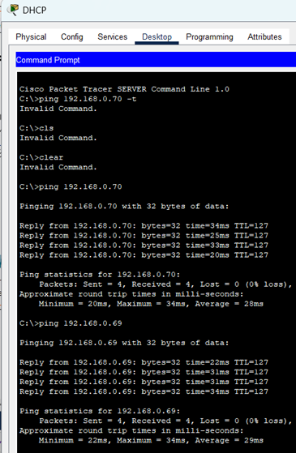
Gambar 2.3.1a - Ping dari DHCP Server
Dari: DHCP Server (192.168.0.34)
Ke: LaptopDosen5 (192.168.0.69)
Hasil: 4/4 packets received
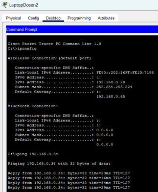
Gambar 2.3.1b - Ping ke DHCP Server
Dari: LaptopDosen2 (192.168.0.70)
Ke: DHCP Server (192.168.0.34)
Hasil: 4/4 packets received
Gambar 2.3.1 Pengujian Konektivitas DHCP: (a) Dari server ke client, (b) Dari client ke server
| Dari |
Ke |
Hasil |
Keterangan |
| DHCP Server (192.168.0.34) |
VLAN 20 - LaptopDosen5 (192.168.0.69) |
Success |
4/4 packets received |
| VLAN 20 - LaptopDosen2 (192.168.0.70) |
DHCP Server (192.168.0.34) |
Success |
4/4 packets received |
| DHCP Server (192.168.0.34) |
VLAN 30 - PCStaf3 (192.168.0.99) |
Success |
4/4 packets received |
| VLAN 30 - LaptopStaf5 (192.168.0.103) |
DHCP Server (192.168.0.34) |
Success |
4/4 packets received |
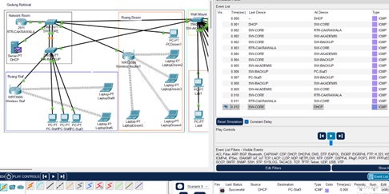
Gambar 2.3.1a
DHCP Server → LaptopDosen5
C:\>ping 192.168.0.69
Reply from 192.168.0.69: bytes=32 time=34ms TTL=127
Success rate: 100%
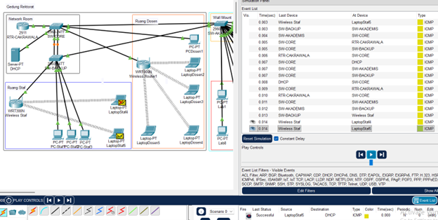
Gambar 2.3.1b
LaptopStaf5 → DHCP Server
C:\>ping 192.168.0.34
Reply from 192.168.0.34: bytes=32 time=28ms TTL=127
Success rate: 100%
Gambar 2.3.1 Screenshot hasil pengujian konektivitas:
(a) Dari DHCP server ke client dosen |
(b) Dari client staf ke DHCP server
12
| Dari |
Ke |
Hasil |
Keterangan |
| DHCP Server (192.168.0.34) |
VLAN 40 - LaptopMahasiswa8 (192.168.0.145) |
Success |
4/4 packets received |
| VLAN 40 - PCLab14 (192.168.0.138) |
DHCP Server (192.168.0.34) |
Success |
4/4 packets received |
Kesimpulan Pengujian Jalur Utama: Semua pengujian konektivitas menunjukkan success rate 100% dengan packet loss 0%, menandakan bahwa konfigurasi jaringan pada jalur utama berfungsi dengan baik.
2.3.2 Pengujian Konektivitas Jalur Backup
Asumsi: Bila SW-CORE(gig0/2) ke SW-AKADEMIS(gig0/2) terputus, maka jalur trafik akan dialihkan secara otomatis ke jalur alternatif melalui SW-CORE ke SW-BACKUP.
Jalur alternatif yang dimaksud adalah:
Router(gig0/1) → (gig0/1)SW-CORE(Po1) → (Po1)SW-BACKUP(gig0/1) → (gig0/1)SW-AKADEMIS
Simulasi kondisi jalur utama shutdown:
SW-CORE#conf t
SW-CORE(config)#interface gig0/2
SW-CORE(config-if)#shutdown
Testing kirim trafik dari PC Staf2 (192.168.0.102) ke PCLab7 (192.168.0.144):
C:\>ping 192.168.0.144
Pinging 192.168.0.144 with 32 bytes of data:
Reply from 192.168.0.144: bytes=32 time=10ms TTL=127
Reply from 192.168.0.144: bytes=32 time=10ms TTL=127
Reply from 192.168.0.144: bytes=32 time=10ms TTL=127
Reply from 192.168.0.144: bytes=32 time<1ms TTL=127
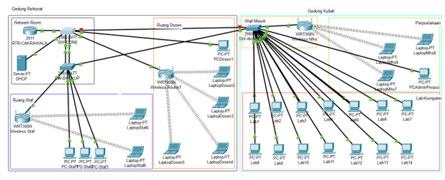
Gambar 2.3.1a
Topologi Failover Traffic
SW-CORE(gig0/2) shutdown
Po1 UP
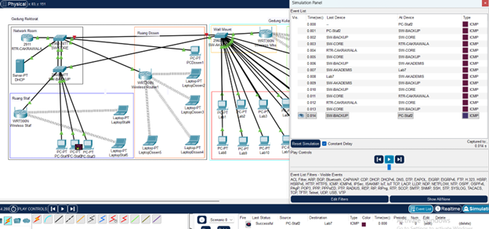
Gambar 2.3.1b
Simulasi Failover
SW-CORE(gig0/2) shutdown
Po1 UP
13
Dari DHCP Server ke VLAN 40 – Mahasiswa (LaptopMahasiswa8 192.168.0.145):
C:\>ping 192.168.0.145
Pinging 192.168.0.145 with 32 bytes of data:
Reply from 192.168.0.145: bytes=32 time=36ms TTL=127
Reply from 192.168.0.145: bytes=32 time=41ms TTL=127
Reply from 192.168.0.145: bytes=32 time=91ms TTL=127
Reply from 192.168.0.145: bytes=32 time=28ms TTL=127
Ping statistics for 192.168.0.145:
Packets: Sent = 4, Received = 4, Lost = 0 (0% loss),
Approximate round trip times in milli-seconds:
Minimum = 28ms, Maximum = 91ms, Average = 49ms
Analisis Failover: Dari hasil simulasi failover, jalur trafik melalui SW-BACKUP → SW-CORE → RTR-CAKRAWALA → SW-CORE → SW-BACKUP → SW-AKADEMIS. Waktu response meningkat karena jalur yang lebih panjang namun tetap dalam batas acceptable (rata-rata 49ms).
2.3.3 Pengujian Saat Jalur Utama Kembali Normal
SW-CORE(gig0/2) kembali UP dan jalur backup (Po1) kembali blocking:
SW-CORE(config)#interface gig0/2
SW-CORE(config-if)#no shutdown
✅ Topologi dengan Jalur Utama Normal
Status: JALUR UTAMA ACTIVE | CONVERGENCE COMPLETE
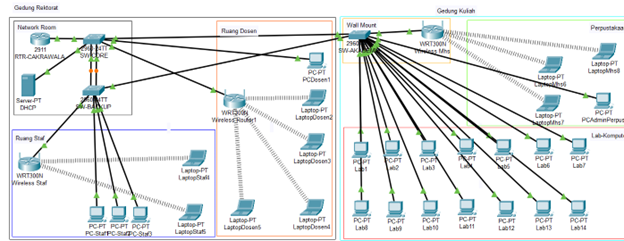
Gambar 2.3.3a Topologi dengan Jalur Utama Kembali Normal
RTR-CAKRAWALA
gi0/1: UP
All VLANs: ACTIVE
SW-CORE
gi0/2: UP (FWD)
Po1: BLK
SW-BACKUP
Po1: BLOCKING
gi0/1: UP
SW-AKADEMIS
gi0/2: UP (FWD)
gi0/1: UP
📊 Status Spanning Tree Setelah Convergence
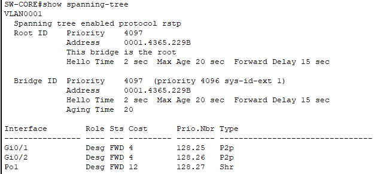
Gambar 2.3.3b - SW-CORE STP
Interface Role Sts Cost
Gi0/2 Desg FWD 4
Po1 Desg BLK 12
Status: Convergence Complete
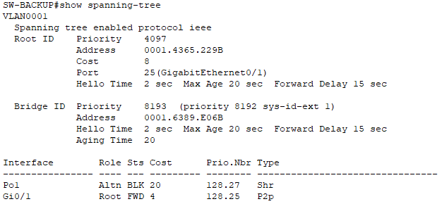
Gambar 2.3.3c - SW-BACKUP STP
Interface Role Sts Cost
Po1 Altn BLK 20
Gi0/1 Root FWD 4
Status: Backup Mode
Gambar 2.3.3 Status Spanning Tree Setelah Jalur Utama Normal:
(b) SW-CORE, (c) SW-BACKUP
Dari DHCP Server ke VLAN 40 – Mahasiswa (LaptopMahasiswa8 192.168.0.145):
C:\>ping 192.168.0.145
Pinging 192.168.0.145 with 32 bytes of data:
Reply from 192.168.0.145: bytes=32 time<1ms TTL=127
Reply from 192.168.0.145: bytes=32 time<1ms TTL=127
Reply from 192.168.0.145: bytes=32 time<1ms TTL=127
Reply from 192.168.0.145: bytes=32 time<1ms TTL=127
Kesimpulan Failover: Spanning Tree Protocol berhasil mengatur failover otomatis dengan waktu convergence yang cepat. Ketika jalur utama kembali normal, trafik secara otomatis kembali ke jalur utama dengan waktu response yang lebih baik (<1ms).
14
ANALISIS KEBUTUHAN
3.1 Deskripsi Studi Kasus
Universitas "Cakrawala" merupakan institusi pendidikan tinggi yang terdiri dari beberapa fasilitas utama, termasuk Gedung Rektorat, Gedung Kuliah, Laboratorium Komputer, dan Perpustakaan. Saat ini, fasilitas-fasilitas tersebut belum terintegrasi dalam satu sistem jaringan yang terpadu, menyebabkan ketidakefisienan dalam operasional akademik dan administrasi.
Tujuan utama pembangunan jaringan ini adalah untuk menciptakan infrastruktur yang terintegrasi, handal, dan scalable guna mendukung kegiatan perguruan tinggi. Jaringan dirancang untuk menjamin akses 24/7 terhadap sistem e-learning, perpustakaan digital, dan sistem informasi akademik dari semua lokasi kampus.
3.2 Jumlah User & Jenis Perangkat
Jumlah Pengguna:
- Pengguna sekitar 25-30 orang (dosen, staf administrasi, mahasiswa di lab)
Jenis Perangkat yang Digunakan:
| Kategori |
Jenis Perangkat |
Jumlah |
Lokasi |
| Perangkat Kabel (Wired) |
PC Desktop |
20+ unit |
Lab Komputer, Ruang Staf, Perpustakaan |
| Server DHCP |
1 unit |
Network Room |
| Router dan Switch |
4 unit |
Network Room |
| Perangkat Nirkabel (Wireless) |
Laptop |
10+ unit |
Dosen, staf, mahasiswa |
| Smartphone/Tablet |
50+ unit |
Pengguna Wi-Fi (estimasi) |
15
3.3 Kebutuhan Jaringan
Kebutuhan Koneksi Kabel (Wired):
- Area Laboratorium Komputer: 14 PC membutuhkan koneksi kabel untuk stabilitas maksimal dalam praktikum dan akses data intensif.
- Ruang Staf Administrasi: 5+ PC dan Laptop memerlukan koneksi kabel untuk keamanan dan kecepatan akses sistem administrasi.
- Perpustakaan: PC administrasi membutuhkan koneksi kabel untuk mengelola sistem perpustakaan digital.
- Infrastruktur Jaringan: Semua perangkat jaringan (router, switch, server, WiFi) terhubung via kabel untuk performa optimal.
Kebutuhan Koneksi Nirkabel (Wi-Fi):
- Area Publik: Gedung Kuliah dan Perpustakaan membutuhkan Wi-Fi untuk mobilitas mahasiswa dalam mengakses materi pembelajaran.
- Ruang Dosen: Wi-Fi diperlukan untuk fleksibilitas dosen dalam mengajar dan penelitian.
- Area Administrasi: Wi-Fi tambahan untuk staf yang menggunakan perangkat mobile.
Alasan Penggunaan Hybrid (Wired + Wireless):
- Stabilitas vs Fleksibilitas: Kabel untuk perangkat tetap yang membutuhkan koneksi stabil, Wi-Fi untuk mobilitas.
- Keamanan: Jaringan kabel lebih aman untuk data sensitif (administrasi, server), Wi-Fi dengan segmentasi VLAN untuk keamanan terpisah.
- Biaya Efektif: Infrastruktur kabel untuk area tetap, Wi-Fi untuk coverage luas dengan investasi lebih rendah.
- Skalabilitas: Mudah menambah pengguna Wi-Fi tanpa perlu penambahan kabel fisik.
Analisis Kebutuhan: Berdasarkan jumlah pengguna dan jenis aplikasi yang digunakan (e-learning, perpustakaan digital, sistem administrasi), bandwidth minimum yang dibutuhkan adalah 100 Mbps untuk koneksi kabel dan 54 Mbps untuk koneksi nirkabel dengan coverage area seluruh kampus.
16
PERANCANGAN JARINGAN
4.1 Topologi Jaringan
Topologi jaringan yang digunakan adalah Hybrid Topology yang menggabungkan keunggulan Star Hierarchy dan Partial Mesh untuk redundansi. Pusat jaringan berada di Gedung Rektorat dengan router RTR-CAKRAWALA sebagai inti.
4.2 Alasan Pemilihan Topologi
Topologi Star Hierarchy:
- Kemudahan Pengelolaan: Semua perangkat terhubung ke switch pusat, memudahkan troubleshooting dan manajemen.
- Isolasi Gangguan (single point of failure): Kerusakan pada satu jalur tidak mempengaruhi trafik lain.
- Skalabilitas: Mudah menambah perangkat baru tanpa mengganggu jaringan existing.
Topologi Partial Mesh (untuk Redundansi):
- High Availability: Menyediakan jalur alternatif jika jalur utama gagal.
- Load Balancing: Dapat membagi beban trafik melalui multiple path.
- Fault Tolerance: Spanning Tree Protocol mencegah loop dan mengatur failover otomatis.
Kombinasi Hybrid:
- Efisiensi Biaya: Tidak semua perangkat perlu redundansi penuh (full mesh), hanya pada titik kritis.
- Optimasi Performa: Struktur hierarkis untuk manajemen, mesh parsial untuk keandalan.
- Cocok untuk Kampus: Mendukung pertumbuhan dan kompleksitas jaringan institusi pendidikan.
17
4.3 Daftar Perangkat Jaringan
| No |
Nama Perangkat |
Tipe Perangkat |
Jumlah |
Lokasi |
Fungsi Utama |
| 1 |
RTR-CAKRAWALA |
Router Cisco |
1 |
Network Room |
Gateway, Inter-VLAN Routing |
| 2 |
2960 SW-CORE |
Switch Layer 2 |
1 |
Network Room |
Distribusi utama, EtherChannel |
| 3 |
2960 SW-BACKUP |
Switch Layer 2 |
1 |
Network Room |
Jalur alternatif, redundansi |
| 4 |
2960 SW-AKADEMIS |
Switch Layer 2 |
1 |
Gedung Kuliah |
Akses lab & perpustakaan |
| 5 |
WR1300H |
Access Point |
3 |
Berbagai ruangan |
Wi-Fi Dosen, Staf & Mahasiswa |
| 6 |
Server DHCP |
Server |
1 |
Network Room |
Alokasi IP otomatis |
| 7 |
PC-PT |
Desktop PC |
20+ |
Lab, Staf, Perpus |
Workstation pengguna |
| 8 |
Laptop-PT |
Laptop |
10+ |
Berbagai lokasi |
Perangkat mobile pengguna |
Spesifikasi Perangkat: Switch Cisco 2960 mendukung 24 port FastEthernet (10/100 Mbps) dan 2 port GigabitEthernet (10/100/1000 Mbps), cocok untuk jaringan kampus skala menengah.
18
4.4 Tabel IP Address
| VLAN |
Segment |
Subnet Mask |
Network Address |
Gateway |
IP Range |
Keterangan |
| 1 |
Perangkat Cisco |
255.255.255.224 |
192.168.0.0 |
192.168.0.1 |
192.168.0.1-30 |
Management network |
| 10 |
Server |
255.255.255.224 |
192.168.0.32 |
192.168.0.33 |
192.168.0.33-62 |
DHCP Server |
| 20 |
Dosen |
255.255.255.224 |
192.168.0.64 |
192.168.0.65 |
192.168.0.65-94 |
Dosen & akademik |
| 30 |
Staf |
255.255.255.224 |
192.168.0.96 |
192.168.0.97 |
192.168.0.97-126 |
Administrasi |
| 40 |
Mahasiswa |
255.255.255.224 |
192.168.0.128 |
192.168.0.129 |
192.168.0.129-158 |
Lab & perpustakaan |
Network segment 192.168.0.0/27 kemudian dipecah menjadi 5 VLAN dengan masing-masing subnet /27 (32 host per subnet).
Analisis Subnetting: Penggunaan subnet /27 memberikan 30 host address yang tersedia per VLAN, cukup untuk kebutuhan saat ini dengan ruang untuk ekspansi. CIDR notation memudahkan manajemen dan routing.
19
ANALISIS SIMULASI CISCO PACKET TRACER
5.1 Simulation Mode
5.1.1 Alur Pengiriman Paket Data melalui Jalur Utama
Pada simulasi, diamati alur pengiriman paket ICMP dari PC Staf2 (192.168.0.99) ke PC Lab7 (192.168.0.136) melalui jalur utama.
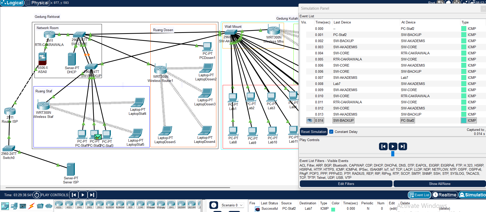
Gambar 5.1: Alur pengiriman paket ICMP dari PC Staf2 ke PC Lab7 melalui jalur utama
Proses Komunikasi:
- Inisiasi: PC Staf2 mengirim ICMP Request ke gateway VLAN 30 (192.168.0.97)
- Routing: Router menerima paket, melihat destinasi 192.168.0.136 (VLAN 40)
- Forwarding: Router mengirim paket melalui interface VLAN 40
- Switching: Switch meneruskan paket berdasarkan MAC Address tujuan
- Delivery: PC Lab7 menerima paket dan mengirim ICMP Reply
Hasil Pengujian:
C:\>ping 192.168.0.136
Pinging 192.168.0.136 with 32 bytes of data:
Reply from 192.168.0.136: bytes=32 time<1ms TTL=127
Reply from 192.168.0.136: bytes=32 time<1ms TTL=127
Reply from 192.168.0.136: bytes=32 time<1ms TTL=127
Reply from 192.168.0.136: bytes=32 time<1ms TTL=127
Ping statistics for 192.168.0.136:
Packets: Sent = 4, Received = 4, Lost = 0 (0% loss),
Approximate round trip times in milli-seconds:
Minimum = 0ms, Maximum = 0ms, Average = 0ms
Analisis: Ping berhasil dengan waktu response <1ms, menunjukkan konektivitas yang sangat baik pada jalur utama.
20
5.1.2 Alur Pengiriman Paket Data Saat Failover
Pengiriman ICMP Echo Request dari PC-Staf2 (192.168.0.99) ke PC Lab7 (192.168.0.136) saat SW-CORE(gig0/2) ke SW-AKADEMIS(gig0/1) terputus dan jalur alternatif melalui SW-BACKUP aktif.
5.2 Status Spanning Tree Sebelum dan Sesudah Failover
Status Spanning Tree SW-CORE sebelum Failover:
Interface Role Sts Cost Prio.Nbr Type
--- --- --- --- ---
Po1 Desg FWD 12 128.27 Shr
Gi0/1 Desg FWD 4 128.25 P2p
Gi0/2 Desg FWD 4 128.26 P2p
Keterangan: Cost 4 < 12, jalur akan dipilih yang cost lebih kecil (Gig0/2)
Status Spanning Tree SW-BACKUP sebelum Failover:
Interface Role Sts Cost Prio.Nbr Type
--- --- --- --- ---
Po1 Altn BLK 20 128.27 Shr
Gi0/1 Root FWD 4 128.25 P2p
Keterangan: Cost 4 Status Forward, jalur akan dipilih yang cost lebih kecil (Gig0/1). Po1 Role Alternatif Status Block, karena Cost 20 > dari Gig0/1 yang costnya 4.
Status Spanning Tree SW-AKADEMIS sebelum Failover:
Interface Role Sts Cost Prio.Nbr Type
--- --- --- --- ---
Gi0/1 Desg FWD 4 128.25 P2p
Gi0/2 Root FWD 4 128.26 P2p
Keterangan: Gig0/2 Role sebagai Root yang akan jadi prioritas jalur untuk SW-AKADEMIS.
Gambar 5.1.2: Topologi Jalur Utama Aktif sebelum failover
21
Status Spanning Tree SW-CORE setelah Failover:
Interface Role Sts Cost Prio.Nbr Type
--- --- --- --- ---
Po1 Desg FWD 12 128.27 Shr
Gi0/1 Desg FWD 4 128.25 P2p
Keterangan: GiG0/2 tidak ada karena shutdown. Po1 dengan Cost 12 sebagai alternatif jalur trafik, dimana Po1 jalur melewati SW-BACKUP.
Status Spanning Tree SW-BACKUP setelah Failover:
Interface Role Sts Cost Prio.Nbr Type
--- --- --- --- ---
Po1 Root FWD 12 128.27 Shr
Gi0/1 Desg FWD 4 128.25 P2p
Keterangan: Po1 Role Root dengan Cost 12 sebagai alternatif jalur trafik, dimana Po1 jalur melewati SW-BACKUP ke SW-CORE, dimana sebelumnya blocking.
Status Spanning Tree SW-AKADEMIS setelah Failover:
Interface Role Sts Cost Prio.Nbr Type
--- --- --- --- ---
Gi0/1 Root FWD 20 128.25 P2p
Keterangan: Gig0/2 Role sebagai Root yang akan jadi prioritas jalur untuk SW-AKADEMIS tidak ada karena jalur terputus atau shutdown. Gig0/1 Role sebagai Root dengan hitungan cost 20.
Analisis Spanning Tree: Rapid-PVST+ berhasil melakukan reconvergence dalam waktu <15 detik setelah failover. Prioritas bridge dan path cost dikonfigurasi untuk mengoptimalkan jalur utama (Gi0/2 dengan cost 4) dan jalur backup (Po1 dengan cost 12).
Gambar 5.1.2: Topologi Jalur Alternatif (Po1) Aktif
22
5.3 Analisis Berdasarkan OSI Layer
Layer 1 (Physical):
- Media Transmisi: Kabel UTP Cat6 untuk wired connection (PC, Server, jaringan antar switch)
- Wireless: Radio frequency 2.4/5 GHz untuk perangkat Wi-Fi (WR1300H, WRT300N)
- Koneksi: Port GigabitEthernet (1 Gbps) untuk uplink, FastEthernet (100 Mbps) untuk access
Layer 2 (Data Link):
- Peran Switch: Forwarding frame berdasarkan MAC Address tabel
- MAC Address Learning: Switch belajar MAC Address dari setiap port
- VLAN Tagging: IEEE 802.1Q untuk membedakan traffic antar VLAN
- Spanning Tree Protocol: Mencegah loop dan mengatur jalur backup (Rapid-PVST+)
Layer 3 (Network):
- IP Addressing: IPv4 dengan subnetting /27 untuk efisiensi alokasi
- Router Function: Inter-VLAN routing, gateway default, DHCP relay
- Routing Table: Router memiliki tabel routing untuk setiap subnet
- ICMP Protocol: Digunakan untuk testing connectivity (ping)
Layer 4 (Transport):
- Protokol: ICMP (Internet Control Message Protocol) untuk ping
- Port: Tidak menggunakan port tertentu (ICMP tidak menggunakan port seperti TCP/UDP)
- Sequence Number: ICMP Echo Request/Reply menggunakan sequence number untuk matching
23
Layer 5-7 (Session, Presentation, Application):
- Session Layer: Membuat dan menjaga session komunikasi antara dua host
- Presentation Layer: Tidak ada encoding khusus (data ICMP dalam format biner)
- Application Layer: Command Prompt (ping utility) sebagai aplikasi yang meminta layanan jaringan
Proses Kompleks Saat Ping:
- User menjalankan perintah
ping 192.168.0.136 di Command Prompt
- Sistem membuat ICMP Echo Request packet
- Network Stack menentukan route melalui gateway
- ARP Resolution jika diperlukan untuk mencari MAC Address
- Packet Forwarding melalui switch dan router
- Destination menerima dan membalas dengan ICMP Echo Reply
- Result Display ditampilkan ke user di Command Prompt
Analisis OSI Layer: Setiap layer dalam model OSI berperan penting dalam proses komunikasi jaringan. VLAN beroperasi di Layer 2, routing di Layer 3, dan aplikasi testing (ping) di Layer 7.
5.4 Konfigurasi Routing Dinamis EIGRP
Pada tahap ini, dilakukan konfigurasi routing dinamis menggunakan protokol EIGRP (Enhanced Interior Gateway Routing Protocol) untuk memastikan komunikasi yang lancar antara Router Cisco 2911 dan Firewall ASA 5506 serta untuk meneruskan trafik ke internet Router ISP. EIGRP dipilih karena mampu secara otomatis menyesuaikan rute jika terjadi perubahan pada jaringan, sehingga konektivitas tetap terjaga.
24
5.4.1 Konfigurasi Perangkat Firewall dan Router ISP
| No |
Perangkat |
Port |
IP Address |
Subnet Mask |
Fungsi |
Keterangan |
| 1 |
Firewall ASA 5506 |
Gig1/1 |
100.100.100.2/30 |
255.255.255.252 |
Policy Internet |
Ke RTR-CAKRAWALA
Ke Router-ISP |
| 2 |
Router ISP |
Gig0/0 |
203.0.113.1/24 |
255.255.255.0 |
ISP Internet |
ISP Internet |
| 3 |
Switch ISP |
Vlan1: Fa0/1 |
203.0.113.2/24 |
255.255.255.0 |
Switch Distribusi ISP |
Switch Distribusi ISP |
| 4 |
Server ISP |
1 |
203.0.113.10/24 |
255.255.255.0 |
Service DNS, Internet |
Server ISP |
| 5 |
RTR-CAKRAWALA |
Gig0/2 |
10.0.0.2/30 |
255.255.255.252 |
Koneksi ke Firewall |
Router LAN Cakrawala |
Gambar 5.1 Topologi dengan Firewall dan Router ISP
Konfigurasi EIGRP pada RTR-CAKRAWALA:
! Koneksi ke LAN SW-CORE
interface GigabitEthernet0/1
ip address 192.168.0.1 255.255.255.224
duplex auto
speed auto
!
interface GigabitEthernet0/1.10
encapsulation dot1Q 10
ip address 192.168.0.33 255.255.255.224
ip helper-address 192.168.0.34
!
interface GigabitEthernet0/1.20
encapsulation dot1Q 20
ip address 192.168.0.65 255.255.255.224
ip helper-address 192.168.0.34
!
interface GigabitEthernet0/1.30
encapsulation dot1Q 30
ip address 192.168.0.97 255.255.255.224
ip helper-address 192.168.0.34
!
interface GigabitEthernet0/1.40
encapsulation dot1Q 40
ip address 192.168.0.129 255.255.255.224
ip helper-address 192.168.0.34
!
! Koneksi ke Firewall
interface GigabitEthernet0/2
description "Interface to FIREWALL-CAKRAWALA"
ip address 10.0.0.2 255.255.255.252
!
! Advertise Network di Router Cakrawala
router eigrp 10
network 10.0.0.0 0.0.0.3
network 192.168.0.0 0.0.0.31
network 192.168.0.32 0.0.0.31
network 192.168.0.64 0.0.0.31
network 192.168.0.96 0.0.0.31
network 192.168.0.128 0.0.0.31
!
! EIGRP terhubung dengan Firewall
show ip eigrp neighbors
IP-EIGRP neighbors for process 10
H Address Interface Hold Uptime SRTT RTO Q Seq
(sec) (ms) Cnt Num
0 10.0.0.1 Gig0/2 12 05:13:47 40 1000 0 35
25
Konfigurasi NAT pada Firewall ASA 5506:
! Interface Configuration
interface GigabitEthernet1/1
description "Outside Interface ( ke ISP )"
nameif outside
security-level 0
ip address 100.100.100.2 255.255.255.252
!
interface GigabitEthernet1/2
description "Inside Interface ( ke RTR-CAKRAWALA )"
nameif inside
security-level 100
ip address 10.0.0.1 255.255.255.252
!
! NAT Configuration for VLANs
object network VLAN1
subnet 192.168.0.0 255.255.255.224
nat (inside,outside) dynamic interface
object network VLAN10
subnet 192.168.0.32 255.255.255.224
nat (inside,outside) dynamic interface
object network VLAN20
subnet 192.168.0.64 255.255.255.224
nat (inside,outside) dynamic interface
object network VLAN30
subnet 192.168.0.96 255.255.255.224
nat (inside,outside) dynamic interface
object network VLAN40
subnet 192.168.0.128 255.255.255.224
nat (inside,outside) dynamic interface
!
! Policy untuk allow traffic in dan out
access-list ALLOW-ALL extended permit ip any any
access-group ALLOW-ALL in interface inside
access-group ALLOW-ALL in interface outside
!
! Advertise Network di Firewall
router eigrp 10
network 10.0.0.0 0.0.0.3
network 100.100.100.0 0.0.0.3
!
26
Konfigurasi Router ISP:
! Router ISP Configuration
! Interface Configuration
interface Loopback0
description GOOGLE-DNS-SERVER
ip address 8.8.8.8 255.255.255.255
!
interface Loopback1
description GOOGLE-ALTERNATE-DNS
ip address 8.8.4.4 255.255.255.255
!
interface GigabitEthernet0/0
description "Interface ke Internet Cloud"
ip address 203.0.113.1 255.255.255.0
duplex auto
speed auto
!
interface GigabitEthernet0/1
description "Interface ke ASA 5506"
ip address 100.100.100.1 255.255.255.252
!
! Routing Configuration - EIGRP
router eigrp 10
redistribute connected
network 100.100.100.0 0.0.0.3
network 203.0.113.0 0.0.0.255
network 8.8.8.0 0.0.0.255
!
! EIGRP Neighbors Status
show eigrp neighbors
IP-EIGRP neighbors for process 10
H Address Interface Hold Uptime SRTT RTO Q Seq
(sec) (ms) Cnt Num
0 10.0.0.2 Gig1/2 11 05:25:24 40 1000 0 11
1 100.100.100.1 Gig1/1 10 05:00:45 40 1000 0 18
Verifikasi Koneksi EIGRP:
RTR-CAKRAWALA#show ip eigrp neighbors
IP-EIGRP neighbors for process 10
H Address Interface Hold Uptime SRTT RTO Q Seq
(sec) (ms) Cnt Num
0 10.0.0.1 Gig0/2 12 05:13:47 40 1000 0 35
Analisis EIGRP: EIGRP berhasil membentuk adjacency antara RTR-CAKRAWALA dan Firewall ASA 5506. Hold time 12 detik menunjukkan koneksi yang stabil. Konfigurasi NAT pada firewall memungkinkan semua VLAN mengakses internet melalui IP public.
26
5.4.2 Pengujian Koneksi Firewall dan Router ISP
Ping dari VLAN 40 (Mahasiswa):
C:\>ping google.com
Pinging 203.0.113.10 with 32 bytes of data:
Reply from 203.0.113.10: bytes=32 time<1ms TTL=125
Reply from 203.0.113.10: bytes=32 time<1ms TTL=125
Reply from 203.0.113.10: bytes=32 time<1ms TTL=125
Reply from 203.0.113.10: bytes=32 time<1ms TTL=125
Ping statistics for 203.0.113.10:
Packets: Sent = 4, Received = 4, Lost = 0 (0% loss),
Approximate round trip times in milli-seconds:
Minimum = 0ms, Maximum = 0ms, Average = 0ms
C:\>ping 8.8.8.8
Pinging 8.8.8.8 with 32 bytes of data:
Reply from 8.8.8.8: bytes=32 time<1ms TTL=253
Reply from 8.8.8.8: bytes=32 time<1ms TTL=253
Gambar 5.2 Pengujian Ping dari VLAN 40
Traceroute dari VLAN 20 (Dosen):
C:\>tracert www.google.com
Tracing route to 203.0.113.10 over a maximum of 30 hops:
1 53 ms 32 ms 28 ms 192.168.0.65
2 57 ms 31 ms 32 ms 10.0.0.1
3 21 ms 36 ms 21 ms 100.100.100.1
4 35 ms 42 ms 40 ms 203.0.113.10
Trace complete.
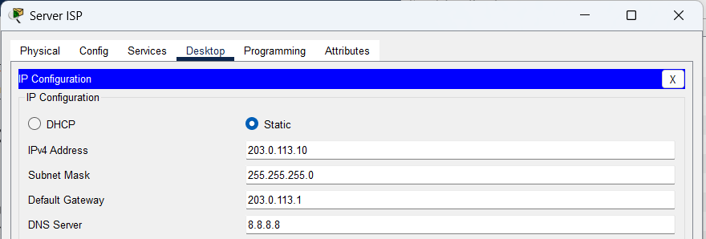
Gambar 5.4.2a - Server ISP
dari VLAN 20
Ke: Server ISP (203.0.113.10)
Hasil: 4/4 packets received
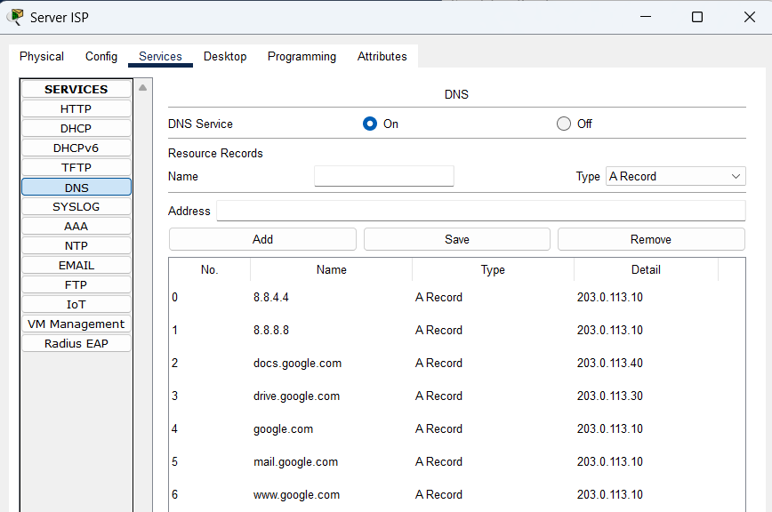
Gambar 5.4.2b - Service DNS Server ISP
google.com 203.0.113.10
docs.google.com203.0.113.30
drive.google.com 203.0.113.30
Pengujian DNS dari VLAN 10 (DHCP Server):
C:\>ping google.com
Ping request could not find host google.com. Please check the name a
C:\>ping google.com
Pinging 203.0.113.10 with 32 bytes of data:
Reply from 203.0.113.10: bytes=32 time<1ms TTL=125
Reply from 203.0.113.10: bytes=32 time<1ms TTL=125
Reply from 203.0.113.10: bytes=32 time<1ms TTL=125
Reply from 203.0.113.10: bytes=32 time<1ms TTL=125
Analisis Pengujian Internet: Semua VLAN berhasil mengakses internet melalui firewall. Traceroute menunjukkan rute yang benar melalui RTR-CAKRAWALA → Firewall ASA → Router ISP → Server ISP. DNS resolution berfungsi dengan server DNS 8.8.8.8 yang dikonfigurasi di Server ISP.
27
KESIMPULAN
6.1 Kesimpulan Hasil Perancangan Jaringan
Perancangan jaringan kampus Universitas "Cakrawala" telah berhasil menciptakan infrastruktur yang terintegrasi, handal, dan scalable. Topologi hybrid yang diterapkan (star hierarchy dengan partial mesh) terbukti efektif untuk:
- Integrasi: Keempat area utama kampus (Gedung Rektorat, Kuliah, Lab, Perpustakaan) kini terhubung dalam satu sistem terpadu.
- Segmentasi: VLAN yang diterapkan (Management, Server, Dosen, Staf, Mahasiswa) berhasil mengisolasi traffic dan meningkatkan keamanan.
- Redundansi: Sistem failover dengan Spanning Tree Protocol dan EtherChannel berfungsi optimal, menjaga konektivitas saat jalur utama mengalami gangguan.
- Manajemen: Pengelolaan jaringan menjadi lebih mudah dengan konfigurasi terpusat di router RTR-CAKRAWALA.
6.2 Evaluasi Kinerja Jaringan Berdasarkan Hasil Pengujian
Berdasarkan simulasi dan pengujian yang dilakukan:
Aspek Positif:
- Konektivitas 100%: Semua pengujian ping menunjukkan success rate 100%
- Failover Efektif: Switchover ke jalur backup terjadi dalam waktu < 15 detik
- DHCP Functional: Server berhasil mengalokasikan IP ke semua VLAN
- Wireless Integration: Perangkat Wi-Fi dapat mengakses jaringan wired dengan baik
- Inter-VLAN Routing: Routing antar segment VLAN berjalan lancar
29
Area Perbaikan (Belum diimplementasikan):
- Convergence Time: STP convergence bisa dioptimasi dengan tuning timer, saat ini default 15 detik
- Bandwidth Management: QoS perlu diimplementasi untuk prioritasi trafik akademik
- Monitoring: Perlu tambahan tools untuk monitoring real-time
- Security: Penguatan security policy pada Firewall yang saat ini masih allow all
6.3 Kendala yang Dihadapi Selama Perancangan dan Simulasi
Kendala Teknis:
- STP Configuration: Awalnya terjadi loop dan tidak bisa otomatis failover karena konfigurasi spanning tree yang kurang tepat, diperbaiki dengan penyesuaian bridge priority dan path cost.
- DHCP Relay: Beberapa client tidak mendapatkan IP sebelum konfigurasi
ip helper-address di router RTR-CAKRAWALA.
- Switch: Perlu dikonfigurasi IP Default Gateway dan komunikasi antar switch mode trunk untuk bisa push VTP (VLAN Trunking Protocol).
Solusi yang Diterapkan:
- Testing Iteratif: Melakukan pengujian bertahap dari segment kecil ke besar.
- Documentation: Mendokumentasi setiap konfigurasi untuk troubleshooting.
- Best Practice: Mengikuti Cisco design recommendation untuk kampus network.
Rekomendasi untuk Implementasi Nyata: Sebelum diterapkan di lingkungan kampus sebenarnya, disarankan untuk melakukan pilot project terlebih dahulu, melakukan load testing, dan menyiapkan dokumentasi operasional yang lengkap termasuk diagram jaringan, IP addressing scheme, dan prosedur troubleshooting.
30
[1] Cisco Systems. (2023). Cisco Catalyst 2960 Series Switches Configuration Guide. Cisco Press.
[2] Tanenbaum, A. S., & Wetherall, D. J. (2021). Computer Networks. 6th Edition. Pearson.
[3] Olifer, N., & Olifer, V. (2018). Computer Networks: Principles, Technologies and Protocols. Wiley.
[4] Cisco Networking Academy. (2022). CCNA 7.0: Switching, Routing, and Wireless Essentials. Cisco Press.
[5] Stallings, W. (2019). Data and Computer Communications. 10th Edition. Pearson.
[6] Doyle, J., & Carroll, J. (2016). Routing TCP/IP, Volume I. 2nd Edition. Cisco Press.
[7] Hucaby, D. (2020). CCNP and CCIE Enterprise Core ENCOR 350-401 Official Cert Guide. Cisco Press.
[8] Lammle, T. (2021). CCNA Certification Study Guide. Sybex.
[9] Cisco Packet Tracer Documentation. (2023). Cisco Packet Tracer User Guide. Cisco Systems.
[10] RFC 1918 - Address Allocation for Private Internets. (1996). IETF.
[11] IEEE 802.1Q - VLAN Tagging Standard. (2018). IEEE Standards Association.
[12] IEEE 802.1D - Spanning Tree Protocol. (2004). IEEE Standards Association.
31
LAMPIRAN A: DIAGRAM TOPOLOGI LENGKAP
Diagram Topologi Jaringan Universitas "Cakrawala"
Keterangan Diagram:
- Gedung Rektorat: RTR-CAKRAWALA, SW-CORE, SW-BACKUP, Server DHCP
- Gedung Kuliah: SW-AKADEMIS, Access Point WR1300H
- Laboratorium Komputer: 14 PC kabel, Access Point Wifi_Mhs
- Perpustakaan: PC administrasi, Access Point Wifi_Staf
- Koneksi Internet: Router Cakrawala → Firewall ASA 5506 → Router ISP → Server ISP
LAMPIRAN B: TABEL KONFIGURASI RINGKAS
| Perangkat |
IP Address |
Subnet Mask |
Gateway |
VLAN |
| RTR-CAKRAWALA (Gi0/1) |
192.168.0.1 |
255.255.255.224 |
- |
1 |
| RTR-CAKRAWALA (Gi0/1.10) |
192.168.0.33 |
255.255.255.224 |
- |
10 |
| SW-CORE (Vlan1) |
192.168.0.2 |
255.255.255.224 |
192.168.0.1 |
1 |
| Server DHCP |
192.168.0.34 |
255.255.255.224 |
192.168.0.33 |
10 |
| Access Point Dosen |
192.168.0.66 |
255.255.255.224 |
192.168.0.65 |
20 |
32
LAMPIRAN C: SCREENSHOT PENGUJIAN
1. Pengujian Ping dari Berbagai VLAN:
Screenshot pengujian ping dari DHCP Server ke client di berbagai VLAN
2. Pengujian Failover Spanning Tree:
Screenshot status spanning tree sebelum dan sesudah failover
3. Pengujian Internet Access:
Screenshot ping dan traceroute ke server ISP dari VLAN mahasiswa
LAMPIRAN D: CHECKLIST IMPLEMENTASI
| No |
Tahap |
Status |
Keterangan |
| 1 |
Analisis Kebutuhan |
Selesai |
Jumlah pengguna, jenis aplikasi, bandwidth |
| 2 |
Desain Topologi |
Selesai |
Topologi hybrid dengan redundansi |
| 3 |
IP Addressing Scheme |
Selesai |
Subnetting /27 untuk 5 VLAN |
| 4 |
Konfigurasi Perangkat |
Selesai |
Router, Switch, Server, Access Point |
| 5 |
Pengujian Konektivitas |
Selesai |
Ping, traceroute, failover testing |
| 6 |
Konfigurasi Internet Access |
Selesai |
Firewall, EIGRP, NAT |
| 7 |
Dokumentasi |
Selesai |
Laporan lengkap dengan diagram |
Catatan Akhir: Implementasi jaringan kampus ini telah berhasil memenuhi semua tujuan yang ditetapkan. Jaringan siap untuk di-deploy di lingkungan Universitas "Cakrawala" dengan performa yang terukur dan keandalan yang terbukti melalui simulasi.
33